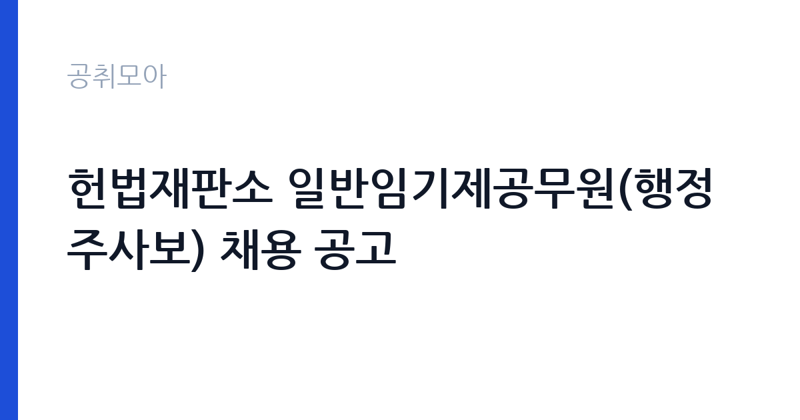

[국가기관] 헌법재판소 일반임기제공무원(행정주사보) 채용 공고
헌법재판소 · 서울 · 마감 2026-11-09 (D-12) · 출처 나라일터

한눈에 보는 모집 조건
| 기관 | 헌법재판소 |
|---|---|
| 공고명 | 헌법재판소 일반임기제공무원(행정주사보) 채용 공고 |
| 고용형태 | 임기제 |
| 근무지 | 서울 |
| 게시일 | 2026-10-28 |
| 마감일 | 2026-11-09 (D-12) |
지원자격, 이렇게 읽으세요
- 일반임기제 행정주사보 1명
- 접수 ~2026-11-09 마감
- 세부 조건은 원문 공고문 확인
임기제공무원은 공무원 신분이지만 임용 기간이 정해져 있습니다. 전문성이 필요한 업무에 채용되며 임용 기간과 연봉등급이 공고문에 명시됩니다. 임기 중에는 공무원으로서의 복무 규정과 이해충돌 방지 의무가 적용됩니다. 이번 공고는 헌법재판소가 직접 진행하는 자체 전형입니다. 임기제·개방형 직위는 경력과 전문성이 가장 중요한 기준입니다. 관련 분야 경력 연수를 필수로 요구하고, 직위별로 자격 요건이 세분화됩니다. 제안서나 직무수행계획서를 제출해야 하는 경우가 많아 준비에 시간이 필요합니다. 시간선택제는 주당 근무 시간을 약정하므로 보수도 비례해 산정됩니다. 이해충돌과 겸직 제한 확인 절차가 있습니다. 응시 자격 판단이 애매하면 접수 전에 채용 담당 부서로 문의하는 편이 안전합니다. 경력 요건은 총 경력이 아니라 해당 직무 경력만 인정하는 경우가 있으니, 증명서의 직무 기술을 함께 확인하십시오. 우대 사항에 해당하면 증빙을 반드시 첨부해야 하며, 누락하면 가점 없이 평가됩니다.
이 공고의 포인트
이 건은 헌법재판소가 같은 시기에 낸 3개 모집분야 가운데 임기제 전문직 직무입니다. 다른 직무 공고와 요건이 다르므로 지원 전에 모집분야 표를 대조해야 합니다. 이 공고의 첫 번째 포인트는 고용 형태입니다. 임용 기간이 정해져 있지만 공무원 신분으로 복무 규정이 적용되고, 전문성이 인정되면 재임용이나 유사 직위 지원에 도움이 됩니다. 두 번째는 업무 범위가 명확하다는 점입니다. 임기제 전문직 직무로 채용되므로 배치 이후 담당 업무가 크게 흔들리지 않습니다. 세 번째는 근무지입니다. 서울 지역 근무로 접근성은 좋지만 그만큼 지원자가 몰리는 지역이므로 경쟁률을 넉넉히 잡아야 합니다. 재공고로 올라온 공고라 이전 차수 지원자와의 형평성 기준을 확인할 필요가 있습니다. 같은 직무로 함께 올라온 공고 6건 가운데 마감이 중간에 위치하므로 다른 공고와 일정이 겹치는지 확인하십시오. 다만 선발 인원이 1명으로 많지 않아 자격을 갖춘 지원자가 몰리면 경쟁률이 높아질 수 있습니다.
전형은 어떻게 진행되나
전형은 서류심사와 면접심사를 기본으로 하고 직무에 따라 필기나 실기, 체력검정이 추가됩니다. 서류 단계에서는 응시자격 충족 여부와 제출서류 형식을 확인하며 이 단계에서 탈락하는 지원자가 적지 않습니다. 면접은 직무 이해도와 경험을 확인하는 방식으로 진행되고 발표는 개별 통보나 홈페이지 게시로 이뤄집니다. 최종합격 이후에는 결격사유 조회와 채용 신체검사가 이어지며 이 절차에서 문제가 확인되면 합격이 취소될 수 있습니다. 구체적인 전형 단계와 배점은 공고문에 표로 정리되어 있으니 원문을 기준으로 준비하십시오. 경력 증명서에 직무 내용이 적혀 있지 않으면 인정받지 못할 수 있으므로 상세 기재를 요청하십시오.
원문에서 확인한 전형 방식
○ 채용분야 : 일반임기제 행정주사보 ○ 채용인원 : 1명 ○ 원서접수 기간 : 2026년 10월 28일 ~ 2026년 11월 9일 18:00 ○ 선발방법 : 서류전형, 필기시험, 면접시험 ○ 담당부서(연락처) : 인사과(02-708-3512)
이런 분께 추천해요
- 해당 분야 경력과 전문성이 충분한 분
- 직무수행계획서를 직접 작성할 수 있는 분
- 임용 기간 중 복무 규정을 준수할 수 있는 분
지원 전 체크리스트
- 응시자격 요건과 경력 기준을 충족하는가 — 경력은 증명서로 입증해야 합니다
- 임용 기간과 연봉등급, 근무 시간 조건을 확인했는가
- 제출서류 목록을 모두 준비했는가 — 누락 시 서류 단계에서 탈락합니다
- 접수 마감 2026-11-09 이전에 접수 방식을 확인해 제출했는가
모집 일정과 제출 타이밍
공고 게시일은 2026-10-28, 접수 마감은 2026-11-09입니다. 준비 기간은 약 12일로 서류 준비와 자격 증빙을 함께 처리하기에는 넉넉하지 않은 편입니다. 첫 이틀 안에 공고문과 첨부 서식을 내려받아 요건을 확인하고 남은 기간에 증빙 서류를 발급받는 일정이 현실적입니다. 면접은 서류 합격자 발표 후 짧은 간격으로 진행되는 경우가 많으므로 서류 제출과 동시에 면접 준비를 시작하는 편이 안전합니다. 마감일에는 접수 시스템이 몰리므로 하루 전까지 제출을 마치는 것이 좋습니다. 접수 첫날에 몰리면 시스템 접속이 지연될 수 있으므로 오전 시간대 제출이 안전합니다.
직무 이해하기: 국가기관
법무·사법 기관은 재판과 송무, 수사, 교정 업무를 담당합니다. 법원행정처와 각급 법원은 재판 지원과 등기, 가족관계 업무를 운영하며, 법무부는 출입국과 보호, 교정 시설을 관리합니다. 보안과 비밀 유지 요건이 다른 기관보다 엄격합니다. 임기제 직위는 정해진 임용 기간 동안 특정 업무나 조직을 책임지는 자리입니다. 개방형 직위는 민간 전문가를 외부에서 선발해 부서 운영이나 사업 관리 전반을 맡깁니다. 업무 범위는 직위 기술서에 구체적으로 정해지며 성과 목표를 설정해 운영합니다. 임용 기간 중에는 공무원 복무 규정과 이해충돌 방지 의무가 적용됩니다. 임기가 끝나면 당연히 퇴직하는 것이 원칙입니다. 이 직무는 담당 구역이 정해져 있어 근무지에 따라 실제 업무 환경이 달라집니다. 업무 매뉴얼과 지침이 문서로 정리되어 있어 절차를 익히면 반복 업무는 빠르게 손에 붙습니다. 이 건의 근무 대상 지역·부서는 원문 기준 '행정주사보'입니다.
자기소개서 작성 팁
임기제·개방형 지원서는 직무수행계획서의 완성도가 당락을 가릅니다. 현안 진단, 목표, 추진 일정, 성과 측정 방식을 구조적으로 쓰십시오. 본인의 경력이 해당 직위와 어떻게 맞는지 근거를 붙여 설명해야 합니다. 임기 종료 후를 전제로 한 표현보다 임기 내 성과에 집중하는 편이 좋습니다. 구성은 지원 동기, 직무 경험, 기여 방안 순서가 무난합니다. 지원 동기는 헌법재판소의 사업 중 본인이 관심을 가진 부분을 한 가지로 좁혀 서술하고 추상적인 표현은 줄이십시오. 직무 경험은 담당했던 업무와 규모, 결과를 수치로 제시하면 설득력이 올라갑니다. 기여 방안은 입사 후 첫 3개월과 1년 계획으로 나눠 쓰면 준비도가 드러납니다.
면접 준비 포인트
면접에서는 직위 수행 계획과 성과 목표를 확인합니다. 조직을 어떻게 운영할지, 한정된 임기 안에 무엇을 달성할지 구체적으로 제시해야 합니다. 이해관계자와의 갈등 관리 방식도 질문 대상입니다. 제안서 내용과 면접 답변이 일치해야 신뢰를 얻습니다. 직무 특성상 체력이나 근무 시간에 대한 질문이 나올 수 있으므로 솔직하게 답하고 관리 계획을 함께 제시하십시오. 지원 기관의 최근 사업이나 조직 개편 내용을 확인해 두면 지원 동기 질문에서 차이가 납니다.
급여·근무조건 읽는 법
헌법재판소의 구체적인 보수 수치는 이 공고 원문의 처우 항목과 보수표에서 확인해야 합니다. 공시 자료로 확인되지 않은 금액은 이 글에서 추정해 제시하지 않습니다. 알리오 2025년 결산 공시 기준 공공기관 전체 일반정규직 1인당 평균보수는 7,376만 9천원, 신입사원 평균초임은 4,031만 6천원입니다(무기계약직 미포함). 임기제공무원의 보수는 지방공무원 또는 국가공무원 보수규정상 연봉등급제를 적용받습니다. 연봉은 등급별 범위에서 경력과 직무 난이도를 반영해 결정되고, 개방형 직위는 별도 기준이 적용되기도 합니다. 시간선택제는 주당 근무 시간에 비례해 연봉이 산정됩니다. 구체적인 등급과 금액은 공고문에서 확인하십시오. 2026년 적용 최저임금은 시급 10,320원, 월 환산 2,156,880원(주 40시간·209시간 기준)입니다. 고용노동부 고시 제2025-47호로 확정된 금액입니다. 공고문에 금액이 제시되지 않은 항목은 원문 보수표나 처우 설명에서 확인해야 하며 확인되지 않은 수치는 쓰지 않는 것이 원칙입니다. 비교할 때는 월 급여뿐 아니라 상여·명절휴가비·복지포인트·초과근무수당까지 포함한 연간 총액으로 계산하십시오. 기간제라면 계약 기간 동안의 총액을, 무기계약이라면 호봉 상승과 정년까지의 누적 소득을 기준으로 판단하는 편이 정확합니다.
자주 묻는 질문
- 선발 인원은 몇 명인가요?
공고문 기준 1명입니다. 직종별로 인원이 나뉘는 경우가 있으니 모집분야 항목을 함께 확인하십시오. - 근무지는 어디인가요?
서울 지역의 헌법재판소 소속 근무지입니다. 세부 주소와 출퇴근 조건은 원문 공고문에서 확인할 수 있습니다. - 보수는 얼마인가요?
채용 신분(임기제공무원)과 기관 임금 규정에 따라 정해지며 구체적인 금액은 공고문 처우 항목에 제시됩니다. 금액이 공개되지 않은 경우에는 원문의 보수표를 확인하십시오.
함께 보면 좋은 공고
[국가기관] 2026년 제주세관 공무직(청소원, 여행자통관지원요원) 채용 공고 — 마감 2026-11-05[국가기관] 2026년 제4회 기상청 공무원 경력경쟁채용시험 공고 — 마감 2026-11-09[국가기관] 공주교육대학교 국가직공무원 행정9급 전입 희망자 모집 공고 — 마감 2026-11-10출처: 나라일터 공개정보를 바탕으로 공취모아가 정리한 안내글입니다. 모집 조건·일정은 변경될 수 있으니 지원 전 반드시 원문 공고문을 확인하세요. 본 글은 정보 제공용이며 합격을 보장하지 않습니다.